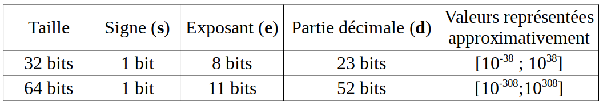

\huge \textbf{Thème 1}\normalsize
\Large \textbf{Chapitre 3 : Représentation des réels}\normalsize
Eléments du programme⚓︎

Un peu d'histoire 2 1⚓︎
1940 : Système de calcul en Virgule flottante (floating-point). Mise au point séparément par George Stibitz (aux USA) et Konrad Zuse (en Allemagne), cette notion fait appel aux puissances de 10. Les grands nombres sont exprimés à l'aide d'une "mantisse" et d'un exposant. On a un gain de place en mémoire et des multiplications plus faciles à effectuer. Le Z3 est le premier calculateur à utiliser ce système avec succès.
Petits calculs, grand problème ...⚓︎
Dans l'invite de commande d'un IDE python, écrivons un petit test très simple :
1 2 | |
En langage python, donc, la somme de 0,1 et 0,2 n'est pas égal à 0,3.
Pour s'en persuader, il suffit de calculer simplement la somme :
1 2 | |
Ce problème est-il lié à juste cette somme ? Non ! La preuve :
1 2 | |
On pourrait trouver de nombreux exemples identiques. De plus, ce problème n'est pas un problème lié au langage python, tout autre langage conduirait à cette même aberration mathématique !
L'objet de ce qui suit va permettre de mieux comprendre cela.
Développement dyadique⚓︎
Division par une puissance de 2⚓︎
Propriété⚓︎
Diviser un nombre écrit en binaire par une puissance de 2 revient à décaler la virgule vers la gauche selon l'exposant de 2.
Exemple⚓︎
On sait que \(\dfrac {272}{16} = 17\)
\(\overline{272}^{10} = \overline{100010000}^2\) donc \(\overline{\dfrac {272}{16}}^{10} = \overline{10001}^2\).
Comme \(16 = 2^4\), on a décalé de 4 rangs.
\(\overline{\dfrac {272}{16}}^{10} = \overline{17}^{10}\) et on a bien \(\overline{17}^{10} = \overline{10001}^2\).
\newpage
Puissances négatives de 2⚓︎
Quelques valeurs utiles à connaître :
\(2^{-1} = \dfrac {1}{2^1} = \dfrac {1}{2} = 0,5\)
\(2^{-2} = \dfrac {1}{2^2} = \dfrac {1}{4} = 0,25\)
\(2^{-3} = \dfrac {1}{2^3} = \dfrac {1}{8} = 0,125\)
\(2^{-4} = \dfrac {1}{2^4} = \dfrac {1}{16} = 0,0625\)
Développement dyadique⚓︎
Du binaire au décimal⚓︎
Exemple
Au même titre que :
\(24,765 = 2 \times 10^1 + 4 \times 10^0 + \dfrac{7}{10^1} + \dfrac {6}{10^2} + \dfrac {5}{10^3}\)
on a :
\(\overline {101,1101}^2 = 1 \times 2^2 + 1 \times 2^0 + \dfrac{1}{2^1} + \dfrac{1}{2^2} + \dfrac{1}{2^4} = \overline{5,8125}^{10}\)
Définition
Soit \(a_0\), \(a_1\), ... \(a_n\), \(b_1\), ..., \(b_m\) des chiffres en écriture binaire (donc des 0 ou des 1).
Ecrire le développement dyadique d'un nombre, c'est écrire ce nombre \(\overline{a_n\ ...\ a_1\ a_0\ ,\ b_1\ b_2\ ...\ b_m}^2\) tel que ce nombre soit égale, en écriture décimale, à \(a_n \times 2^n + ... + a_1 \times 2^1 + a_0 \times 2^0 + \dfrac{b_1}{2^1} + \dfrac {b_2}{2^2} + ... \dfrac {b_m}{2^m}\)
Ainsi : \(\overline{a_n\ ...\ a_1\ a_0\ ,\ b_1\ b_2\ ...\ b_m}^2 = a_n \times 2^n + ... + a_1 \times 2^1 + a_0 \times 2^0 + \dfrac{b_1}{2^1} + \dfrac {b_2}{2^2} + ... \dfrac {b_m}{2^m}\)
Exercice
Déterminer l'écriture décimale de \(\overline{1001,10011}^2\).
Du décimal en binaire⚓︎
Méthode
Pour écrire le développement dyadique d'un nombre écrit en écriture décimale, on procède de la manière suivante :
- la partie entière (à gauche de la virgule) est écrite en binaire ;
- on multiplie la partie décimale (à droite de la virgule) par 2 en recopiant alors la partie entière du produit obtenu ;
- on reproduit le point précédent en multipliant par 2 de nouveau la partie décimale et en recopiant la partie entière du produit obtenu et ainsi de suite jusqu'à obtenir une partie décimale nulle.
Exemple
Ecrire l'écriture binaire de \(\overline{5,890 625}^{10}\).
- On écrit 5 en binaire : \(\overline{5}^{10} = \overline{101}^2\) donc l'écriture binaire de \(\overline{5,890 625}^{10}\) commence par : 101,...
- On multiplie par 2 la partie décimale 0,890625 : \(0,890625 \times 2 = 1,78125\)
donc l'écriture binaire de \(\overline{5,890 625}^{10}\) commence par : 101,1...
et on recommence avec la partie décimale 0,78125. - On multiplie par 2 la partie décimale 0,78125 : \(0,78125 \times 2 = 1,5625\)
donc l'écriture binaire de \(\overline{5,890 625}^{10}\) commence par : 101,11...
et on recommence avec la partie décimale 0,5625. - On multiplie par 2 la partie décimale 0,5625 : \(0,5625 \times 2 = 1,125\)
donc l'écriture binaire de \(\overline{5,890 625}^{10}\) commence par : 101,111...
et on recommence avec la partie décimale 0,125. - On multiplie par 2 la partie décimale 0,125 : \(0,125 \times 2 = 0,25\)
donc l'écriture binaire de \(\overline{5,890 625}^{10}\) commence par : 101,1110...
et on recommence avec la partie décimale 0,25. - On multiplie par 2 la partie décimale 0,25 : \(0,25 \times 2 = 0,5\)
donc l'écriture binaire de \(\overline{5,890 625}^{10}\) commence par : 101,11100...
et on recommence avec la partie décimale 0,5. - On multiplie par 2 la partie décimale 0,5 : \(0,5 \times 2 = 1\)
donc l'écriture binaire de \(\overline{5,890 625}^{10}\) est finalement : 101,111001.
Ainsi : \(\overline{5,890 625}^{10} = \overline{101,111001}^2\)
Exercice⚓︎
Donner le développement dyadique des nombres suivants :
- \(A = \overline{98,625}^{10}\)
- \(B = \overline{0,25}^{10}\)
- \(C = \overline{0,9375}^{10}\)
- \(D = \overline{0,1}^{10}\)
\newpage
- \(E = \overline{\dfrac{1}{3}}^{10}\)
Les deux derniers de l'exercice donne un début d'explication du problème détecté au début du chapitre. Au même titre que certains nombres n'ont pas d'écriture décimale finie, des nombres ne peuvent pas avoir de développement dyadique fini, ce qui nécessite d'utiliser une valeur approchée dans les calculs.
Une autre raison vient du fait que le nombre de bits fixés pour la représentation limite les possibilités de représentation et nécessite donc parfois de représenter une valeur approximative également, source du problème initialement soulevé.
Norme IEEE 754 : représentation en mémoire (pour information)⚓︎
Selon la précision ou l'intervalle de représentation souhaité, la norme IEEE754 définit une représentation sur 32 bits (simple précision ou encore binary32) ou sur 64 bits (double précision ou encore binary64)
Pour représenter un nombre binaire à virgule, nous allons nous inspirer de la notation scientifique.
Ecriture scientifique⚓︎
L'écriture scientifique d'un nombre réel est une écriture de la forme \(\pm m \times 10^e\) où \(0 \leqslant m < 10\) et \(e \in \mathbb{Z}\).
m s'appelle la mantisse et e l'exposant.
Exemple⚓︎
\(12\ 345,8\ 765 = 1,23458765 \times 10^{4}\)
Principe⚓︎
Nous allons donc procéder de même pour les nombres binaires à virgule sauf que cette fois, ce sera une puissance de 2 et non de 10 qui sera utilisée.
Par exemple, représentons le nombre \(\dfrac{222}{8}\) (c'est à dire 27,75) :
\(\overline{222}^{10} = \overline{11011110}^2\) donc \(\dfrac{222}{8} = \overline{11011,110}^2\) (en écriture binaire, diviser par 8, c'est à dire \(2^3\) revient à décaler la virgule de trois rangs à gauche).
Ensuite, on écrit le nombre avec une mantisse comprise entre 1 et 1,1111111111... : \(\overline{11011,110}^2 = \overline{1,1011110}^2 \times 2^4\)
Pour représenter un tel nombre \((-1)^s \times 1,d \times 2^{e-127}\), on utilisera :


Remarque⚓︎
La virgule se déplaçant pour représenter le nombre, ces nombres s'appellent des nombres flottants.
Valeurs particulières⚓︎
Avec cette norme, il existe des triplets \((s ; e ; f)\) non utilisés. Ces dernier permettent alors de traduire certaines valeurs spéciales.
Par exemple, \(+\infty\) sera codé par le triplet \((0~;~11111111~;~0)\). Autre exemple, \(+0\) sera codé par le triplet \((0~;~0~;~0)\).
Le triplet \((0~;~11111111~;~valeur\ différente\ de\ 0)\) représente la valeur spéciale NaN (Not a Number), valeur utilisée pour indiquer un résultat d'opération impossible ("0/0", \(\sqrt{-3}\), ...).
Les flottants en programmation⚓︎
Comme faire ?⚓︎
En programmation, il vaut mieux donc éviter de comparer des flottants.
Si réellement, la comparaison de flottant est nécessaire, il faudra alors créer une fonction de comparaison de nombres flottants où l'égalité est considérée comme vraie selon une précision donnée :
1 2 3 4 5 6 7 8 9 10 11 12 13 14 15 16 17 18 19 20 21 22 23 24 25 | |
Définir un entier ou un flottant sous python ?⚓︎
Comme nous l'avons déjà vu, et contrairement à d'autres langages comme le Java Script ou le C++, il n'est pas utile de définir le type d'une variable. Pour pouvoir malgré tout indiquer à l'interpréteur si par exemple le nombre 2022 est l'entier 2022 ou le flottant 2022 qu'il faut représenter, on écrira :
1 2 | |
On peut vérifier cela aisément à l'aide des fonctions type or isinstance:
1 2 3 4 5 6 7 8 | |
Pour s'entraîner ...⚓︎
Exercice⚓︎
Coder en binaire les nombres suivants :
- \(\dfrac{71}{16}\)
- \(\dfrac{113}{8}\)
- \(\dfrac{61}{4}\)
- \(\dfrac{57}{2}\)
Exercice⚓︎
Ecrire en écriture décimale les développements dyadiques suivants :
- \(\overline{1111,1111}^2\)
- \(\overline{101,010101}^2\)
- \(\overline{0,00001}^2\)
- \(\overline{111,000111}^2\)
Exercice⚓︎
Déterminer les développements dyadiques des nombres suivants.
Si ce développement semble infini, se limiter à 8 chiffres après la virgule.
- \(\overline{28,625}^{10}\)
- \(\overline{198,3125}^{10}\)
- \(\overline{17,23}^{10}\)
- \(\overline{0,15}^{10}\)
Source
- Damien ICETA et Xavier PESSOLES. Cours : représentation des nombres réels [en ligne]. Page créée en juin 2013, mise à jour le décembre 2014 [Consulté le 24 septembre 2019]. http://xpessoles.ptsi.free.fr/fichiers/PDF/Informatique/CI_01_04_NombresReels_Cours.pdf
-
François GUILLIER. Histoire de l'informatique [en ligne]. 2016 [consulté le 18 juillet 2019]. histoire-informatique.org ↩
-
Serge ROSSI. Histoire de l'informatique [en ligne]. 20 novembre 2004 [consulté le 18 juillet 2019]. histoire.info.online.fr ↩